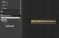

Adding Blueprints To Scrollbox
Considerations
I had the problem that I wanted to create a Blueprint that contained a complex button setup as well as other data. then I wanted to add that blueprint through the CreateWidget node to a scrollbox.
I learned the basics of this from Rama's tutorial which I link at the bottom. However the problem was that it requires that the button is added to the scrollbox, not the returned widget. This makes it impossible to iterate over the scrollbox's children and then cast each returned widget to my BP type because the button was not derived from my BP but part of it.
The Solution
After some research I found a way to attach the returned BP widget directly to a scrollbox (and presumably to other widgets like HorizontalBox as well). the picture below shows the architecture in my BP that works for me:
-

My Solution
If you wrap your Button or whatever you use in the way shown, chances are that you can add the returned Widget directly to the scrollbox and then cast any child widget back to your BP class with access to all functions and variables in your BP
Related Wikis